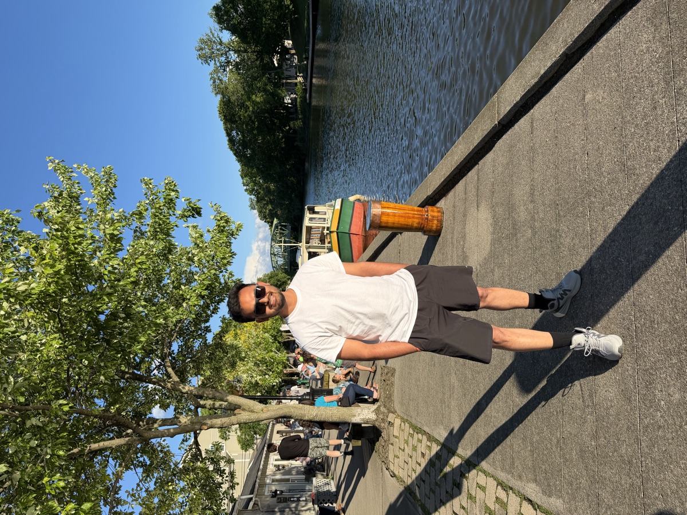

<meta charset="UTF-8" />
<meta name="viewport" content="width=device-width, initial-scale=1.0" />
<title>J.K. Sah | Mechanical Engineering Researcher</title>
<meta
  name="description"
  content="J.K. Sah, mechanical engineering researcher: thermal and fluid sciences, fluid-structure interaction and bio-inspired flow sensing. Seeking an MS or PhD research assistantship from Spring 2027."
/>
<meta name="author" content="J.K. Sah" />

<!-- Open Graph (LinkedIn, Facebook, Slack, etc.) -->
<meta property="og:type" content="website" />
<meta property="og:site_name" content="J.K. Sah" />
<meta property="og:url" content="https://jk-sah.github.io/" />
<meta property="og:title" content="J.K. Sah | Portfolio" />
<meta
  property="og:description"
  content="Mechanical engineering researcher: thermal and fluid sciences, fluid-structure interaction, bio-inspired sensing. Open to MS/PhD research assistantships from Spring 2027."
/>
<meta property="og:image" content="https://jk-sah.github.io/assets/profile.jpg" />
<meta property="og:image:secure_url" content="https://jk-sah.github.io/assets/profile.jpg" />
<meta property="og:image:type" content="image/jpeg" />
<meta property="og:image:width" content="1200" />
<meta property="og:image:height" content="900" />
<meta property="og:image:alt" content="J.K. Sah" />

<!-- Twitter Card -->
<meta name="twitter:card" content="summary_large_image" />
<meta name="twitter:title" content="J.K. Sah | Portfolio" />
<meta
  name="twitter:description"
  content="Mechanical engineering researcher: thermal and fluid sciences, fluid-structure interaction, bio-inspired sensing. Open to MS/PhD research assistantships from Spring 2027."
/>
<meta name="twitter:image" content="https://jk-sah.github.io/assets/profile.jpg" />

<link rel="preconnect" href="https://fonts.googleapis.com" />
<link rel="preconnect" href="https://fonts.gstatic.com" crossorigin />
<link
  href="https://fonts.googleapis.com/css2?family=Fraunces:opsz,wght@9..144,400;9..144,500;9..144,600&family=Inter:wght@400;500;600;700&family=JetBrains+Mono:wght@400;500&display=swap"
  rel="stylesheet"
/>
<link rel="stylesheet" href="styles.css" />

<!-- ===================== NAVBAR ===================== -->
<header class="nav" id="nav">
  <div class="nav__inner">
    <a href="#home" class="nav__brand">
      <span class="nav__brand-mark">JK</span>
      <span class="nav__brand-name">J.K. Sah</span>
    </a>

    <nav class="nav__links" id="navLinks">
      <a href="#about">About</a>
      <a href="#skills">Skills</a>
      <a href="#research">Research</a>
      <a href="#experience">Experience</a>
      <a href="#projects">Projects</a>
      <a href="#publications">Publications</a>
      <a href="#contact">Contact</a>
      <a href="assets/cv.pdf" class="nav__cv" target="_blank" rel="noopener">CV ↗</a>
    </nav>

    <div class="nav__actions">
      <button class="icon-btn" id="themeToggle" aria-label="Toggle dark mode" title="Toggle theme">
        <svg class="icon-sun" viewBox="0 0 24 24" width="20" height="20" fill="none" stroke="currentColor" stroke-width="2" stroke-linecap="round"><circle cx="12" cy="12" r="4"/><path d="M12 2v2M12 20v2M4.9 4.9l1.4 1.4M17.7 17.7l1.4 1.4M2 12h2M20 12h2M4.9 19.1l1.4-1.4M17.7 6.3l1.4-1.4"/></svg>
        <svg class="icon-moon" viewBox="0 0 24 24" width="20" height="20" fill="none" stroke="currentColor" stroke-width="2" stroke-linecap="round"><path d="M21 12.8A9 9 0 1 1 11.2 3a7 7 0 0 0 9.8 9.8z"/></svg>
      </button>
      <button class="icon-btn nav__burger" id="burger" aria-label="Menu">
        <span></span><span></span><span></span>
      </button>
    </div>
  </div>
</header>

<main>
  <!-- ===================== HERO ===================== -->
  <section class="hero" id="home">
    <div class="hero__bg" aria-hidden="true"></div>
    <div class="container hero__inner">
      <div class="hero__text">
        <p class="hero__eyebrow">Mechanical Engineering Researcher</p>
        <h1 class="hero__name"><span class="hero__name-alt">J.K.</span> Sah</h1>
        <p class="hero__tagline">
          I work on <strong>fluid-structure interaction</strong> and
          <strong>thermal-fluid problems</strong> through experiments and
          simulation: towing-tank tests of a seal-whisker sensor array, CFD,
          and finite-element models.
        </p>
        <p class="hero__status">
          <span class="hero__status-dot" aria-hidden="true"></span>
          Open to MS or PhD research assistantships from Spring 2027
        </p>
        <ul class="hero__facts" aria-label="At a glance">
          <li><strong>4.0/4.0</strong> graduate GPA</li>
          <li><strong>7</strong> peer-reviewed papers</li>
          <li>Reviewer for <strong>2</strong> journals</li>
          <li>IELTS <strong>7.0</strong></li>
        </ul>

        <div class="hero__cta">
          <a href="#research" class="btn btn--primary">View Research</a>
          <a href="assets/cv.pdf" class="btn btn--ghost" target="_blank" rel="noopener">Download CV</a>
        </div>

        <ul class="social" aria-label="Social links">
          <li><a href="mailto:js8472@rit.edu" title="Email" aria-label="Email">
            <svg viewBox="0 0 24 24" width="20" height="20" fill="none" stroke="currentColor" stroke-width="2"><rect x="3" y="5" width="18" height="14" rx="2"/><path d="m3 7 9 6 9-6"/></svg>
          </a></li>
          <li><a href="https://github.com/JK-Sah" target="_blank" rel="noopener" title="GitHub" aria-label="GitHub">
            <svg viewBox="0 0 24 24" width="20" height="20" fill="currentColor"><path d="M12 .5A11.5 11.5 0 0 0 .5 12a11.5 11.5 0 0 0 7.86 10.92c.58.1.79-.25.79-.56v-2c-3.2.7-3.88-1.37-3.88-1.37-.53-1.34-1.3-1.7-1.3-1.7-1.06-.72.08-.71.08-.71 1.17.08 1.79 1.2 1.79 1.2 1.04 1.78 2.73 1.27 3.4.97.1-.75.4-1.27.73-1.56-2.55-.29-5.23-1.28-5.23-5.7 0-1.26.45-2.29 1.19-3.1-.12-.29-.52-1.46.11-3.05 0 0 .97-.31 3.18 1.18a11 11 0 0 1 5.8 0c2.2-1.49 3.17-1.18 3.17-1.18.63 1.59.23 2.76.11 3.05.74.81 1.19 1.84 1.19 3.1 0 4.43-2.69 5.41-5.25 5.69.41.36.78 1.05.78 2.12v3.14c0 .31.21.67.8.56A11.5 11.5 0 0 0 23.5 12 11.5 11.5 0 0 0 12 .5z"/></svg>
          </a></li>
          <li><a href="https://scholar.google.com/citations?user=Iraldw0AAAAJ&hl=en" target="_blank" rel="noopener" title="Google Scholar" aria-label="Google Scholar">
            <svg viewBox="0 0 24 24" width="20" height="20" fill="currentColor"><path d="M12 3 1 9l11 6 9-4.91V17h2V9L12 3zM5 13.18v3.5L12 20l7-3.32v-3.5L12 17l-7-3.82z"/></svg>
          </a></li>
          <li><a href="https://www.linkedin.com/in/jk-sah/" target="_blank" rel="noopener" title="LinkedIn" aria-label="LinkedIn">
            <svg viewBox="0 0 24 24" width="20" height="20" fill="currentColor"><path d="M4.98 3.5A2.5 2.5 0 1 1 0 3.5a2.5 2.5 0 0 1 4.98 0zM.24 8h4.5v12H.24V8zm7.5 0h4.3v1.64h.06c.6-1.06 2.06-2.18 4.24-2.18 4.54 0 5.38 2.86 5.38 6.58V20h-4.5v-5.28c0-1.26-.02-2.88-1.76-2.88-1.76 0-2.03 1.37-2.03 2.79V20h-4.5V8z"/></svg>
          </a></li>
          <li><a href="https://orcid.org/0000-0002-7643-5137" target="_blank" rel="noopener" title="ORCID" aria-label="ORCID">
            <svg viewBox="0 0 24 24" width="20" height="20" fill="currentColor"><path d="M12 0a12 12 0 1 0 0 24 12 12 0 0 0 0-24zM8.5 7.4a1.1 1.1 0 1 1 0-2.2 1.1 1.1 0 0 1 0 2.2zm.9 10.5H7.6V8.9h1.8v9zM12 8.9h3.5c3.3 0 4.8 2.4 4.8 4.5 0 2.3-1.8 4.5-4.8 4.5H12v-9zm1.8 1.6v5.8h1.6c2.3 0 2.9-1.7 2.9-2.9 0-1.9-1.2-2.9-3-2.9h-1.5z"/></svg>
          </a></li>
        </ul>
      </div>

      <div class="hero__photo">
        <div class="photo-frame">
          
          <span class="photo-frame__placeholder">Add <code>assets/profile.jpg</code></span>
        </div>
        <div class="photo-badge">
          <svg viewBox="0 0 24 24" width="16" height="16" fill="none" stroke="currentColor" stroke-width="2"><path d="M12 2 2 7l10 5 10-5-10-5zM2 17l10 5 10-5M2 12l10 5 10-5"/></svg>
          Fluids · Thermal · Sensors
        </div>
      </div>
    </div>
  </section>

  <!-- ===================== ABOUT ===================== -->
  <section class="section" id="about">
    <div class="container">
      <div class="section__head">
        <span class="section__num">01</span>
        <h2>About</h2>
      </div>
      <div class="about">
        <p>
          I'm a mechanical engineer who works across hardware, experiments and
          simulation. In graduate research I ran towing-tank experiments with a
          seal-whisker sensor array, repaired its 32-channel sensor board and
          rewrote the firmware, and set up a BlueROV2 as the test vehicle. On
          the computational side I build finite-element and reduced-order models
          and use them as baselines for newer solvers.
        </p>
        <p>
          Before graduate school I spent almost two years in Japan as a
          mechanical design engineer, doing CAD design, 3D modeling and
          simulation, and a year in Nepal on industrial energy audits and solar
          monitoring. The energy work is where my interest in thermal science
          started, and I'd like to take it further in research.
        </p>
      </div>
    </div>
  </section>

  <!-- ===================== SKILLS ===================== -->
  <section class="section section--alt" id="skills">
    <div class="container">
      <div class="section__head">
        <span class="section__num">02</span>
        <h2>Technical Skills</h2>
      </div>
      <div class="skills">
        <div class="skills__group">
          <h3>Programming &amp; Data</h3>
          <ul>
            <li>Python</li><li>MATLAB</li><li>Signal processing (FFT)</li><li>Data analysis</li><li>Neural operators</li>
          </ul>
        </div>
        <div class="skills__group">
          <h3>Simulation &amp; Modeling</h3>
          <ul>
            <li>CFD</li><li>Fluid-structure interaction</li><li>Immersed-boundary methods</li><li>Finite element method</li><li>Reduced-order models</li><li>ANSYS CFX / Fluent</li>
          </ul>
        </div>
        <div class="skills__group">
          <h3>Thermal &amp; Energy</h3>
          <ul>
            <li>Building energy audits</li><li>Industrial energy audits</li><li>EnergyPlus</li><li>LEAP</li><li>PVsyst</li>
          </ul>
        </div>
        <div class="skills__group">
          <h3>Experiments &amp; Instrumentation</h3>
          <ul>
            <li>Towing-tank testing</li><li>Strain-gauge sensors</li><li>SPI sensor interfacing</li><li>ESP32 firmware</li><li>PCB debugging</li><li>Oscilloscope / multimeter</li>
          </ul>
        </div>
        <div class="skills__group">
          <h3>CAD &amp; 3D Modeling</h3>
          <ul>
            <li>SOLIDWORKS</li><li>AutoCAD</li><li>SketchUp</li><li>3D modeling</li>
          </ul>
        </div>
        <div class="skills__group">
          <h3>General</h3>
          <ul>
            <li>LaTeX</li><li>Git</li><li>Experimental design</li><li>Technical writing</li>
          </ul>
        </div>
      </div>
    </div>
  </section>

  <!-- ===================== RESEARCH ===================== -->
  <section class="section" id="research">
    <div class="container">
      <div class="section__head">
        <span class="section__num">03</span>
        <h2>Research</h2>
      </div>
      <p class="section__intro">
        I split my time between the towing tank and the compute cluster. Across
        these projects I try to test each new method against the strongest
        baseline I can build, and to count all of its costs.
      </p>
      <div class="cards">
        <article class="card">
          <div class="card__icon">🦭</div>
          <h3>Bio-Inspired Flow Sensing</h3>
          <p>Seal-whisker sensor arrays for underwater detection and tracking: towing-tank tests of whisker-wake interaction, a 32-channel sensor board, and a BlueROV2 test vehicle.</p>
        </article>
        <article class="card">
          <div class="card__icon">🔥</div>
          <h3>Thermal Science &amp; Energy</h3>
          <p>Energy audits of buildings and industrial plants in Nepal: an EnergyPlus model that found 37% savings potential in a campus building, and boiler insulation estimated to save 15% of fuel.</p>
        </article>
        <article class="card">
          <div class="card__icon">📐</div>
          <h3>Computational Mechanics</h3>
          <p>Finite-element and reduced-order models for 2D linear elasticity, used as strong baselines in a full-cost benchmark of newer learned solvers.</p>
        </article>
        <article class="card">
          <div class="card__icon">🌱</div>
          <h3>Low-Carbon Materials</h3>
          <p>A systematic review of when carbonation-cured concrete actually lowers CO<sub>2</sub> emissions, published in the <em>Journal of Cleaner Production</em>.</p>
        </article>
      </div>
    </div>
  </section>

  <!-- ===================== EXPERIENCE / EDUCATION ===================== -->
  <section class="section section--alt" id="experience">
    <div class="container">
      <div class="section__head">
        <span class="section__num">04</span>
        <h2>Experience &amp; Education</h2>
      </div>
      <div class="xp">
        <div class="xp__col">
          <h3 class="xp__title">Experience</h3>
          <ol class="tl">
            <li class="tl__item">
              <span class="tl__date">Jan 2026 – Present</span>
              <h4>Graduate Research Assistant</h4>
              <p class="tl__org">Rochester Institute of Technology · Rochester, NY</p>
              <p>Towing-tank experiments with a 9-sensor seal-whisker array; repaired a 32-channel sensor board and rewrote its ESP32 firmware; assembled a BlueROV2 test vehicle. Funded by the U.S. Naval Research Laboratory.</p>
            </li>
            <li class="tl__item">
              <span class="tl__date">Apr 2024 – Nov 2025</span>
              <h4>Mechanical Design Engineer</h4>
              <p class="tl__org">Ozaki Design Office · Niihama City, Japan</p>
              <p>CAD design, 3D modeling and engineering simulation of mechanical components; industrial site visits to study and analyze them.</p>
            </li>
            <li class="tl__item">
              <span class="tl__date">Apr 2023 – Mar 2024</span>
              <h4>Research Assistant</h4>
              <p class="tl__org">Center for Energy Studies, IOE, Tribhuvan University · Nepal</p>
              <p>25+ solar-monitoring projects and industrial energy audits; national energy-intensity assessment and wind-energy potential studies.</p>
            </li>
            <li class="tl__item">
              <span class="tl__date">Apr – May 2022</span>
              <h4>Intern</h4>
              <p class="tl__org">Alternative Energy Promotion Center · Kathmandu, Nepal</p>
              <p>Hands-on energy auditing, renewable energy, and energy policy &amp; outreach.</p>
            </li>
          </ol>
        </div>
        <div class="xp__col">
          <h3 class="xp__title">Education</h3>
          <ol class="tl">
            <li class="tl__item">
              <span class="tl__date">Jan 2026 – Present</span>
              <h4>Ph.D., Mechanical Engineering</h4>
              <p class="tl__org">Rochester Institute of Technology · Rochester, NY</p>
              <p>GPA 4.0/4.0. Coursework includes Computational Methods in Fluid Dynamics, Continuum Mechanics and Advanced Engineering Mathematics.</p>
            </li>
            <li class="tl__item">
              <span class="tl__date">Nov 2018 – Apr 2023</span>
              <h4>B.E., Mechanical Engineering</h4>
              <p class="tl__org">Pulchowk Campus, IOE, Tribhuvan University · Kathmandu, Nepal</p>
              <p>Overall score 76.36/100, on a merit-based full scholarship.</p>
            </li>
            <li class="tl__item">
              <span class="tl__date">English proficiency</span>
              <h4>IELTS 7.0/9.0</h4>
            </li>
          </ol>
        </div>
      </div>
    </div>
  </section>

  <!-- ===================== PROJECTS ===================== -->
  <section class="section" id="projects">
    <div class="container">
      <div class="section__head">
        <span class="section__num">05</span>
        <h2>Selected Projects</h2>
      </div>
      <div class="projects">
        <a class="project" href="https://github.com/JK-Sah/spectral-pideeponet-elasticity" target="_blank" rel="noopener">
          <div class="project__top">
            <h3>Physics-Informed DeepONet for 2D Elasticity</h3>
            <span class="project__lang"><span class="dot dot--py"></span>Python</span>
          </div>
          <p>An operator-learning surrogate predicting displacement and stress fields for static linear elasticity, packaged as a standalone study.</p>
          <span class="project__link">View on GitHub →</span>
        </a>
        <article class="project">
          <div class="project__top">
            <h3>Study of Energy Scenario &amp; Improvement Opportunities of ICT Building, Pulchowk Campus</h3>
            <span class="tag">B.E. Thesis</span>
          </div>
          <p>Identified 37.12% energy-saving potential in an ICT building via EnergyPlus simulations and audits, proposing HVAC optimization and LED retrofits.</p>
        </article>
        <article class="project">
          <div class="project__top">
            <h3>Industrial Energy Audit, Dairy Development Corp.</h3>
            <span class="tag">B.E. Intern</span>
          </div>
          <p>Integrated recovery system: 138 kVA/month demand reduction via power-factor correction (0.67→0.98) and 15% boiler-fuel savings through insulated cladding, with a 2-month payback.</p>
        </article>
      </div>
      <p class="projects__more">
        More code on <a href="https://github.com/JK-Sah" target="_blank" rel="noopener">github.com/JK-Sah</a>
      </p>
    </div>
  </section>

  <!-- ===================== PUBLICATIONS ===================== -->
  <section class="section section--alt" id="publications">
    <div class="container">
      <div class="section__head">
        <span class="section__num">06</span>
        <h2>Publications</h2>
      </div>

      <h3 class="pubs__group">Peer-Reviewed Journal Articles</h3>
      <ol class="pubs">
        <li class="pub">
          <p class="pub__title">When is carbonation-cured concrete actually cleaner? A systematic review, a net-benefit condition framework, and a proposed minimum reporting set for CO<sub>2</sub> mineralization in cement-based products</p>
          <p class="pub__authors"><strong>Sah, J. K.</strong></p>
          <p class="pub__meta"><em>Journal of Cleaner Production</em>, 579, 149605 · 2026 · <a href="https://doi.org/10.1016/j.jclepro.2026.149605" target="_blank" rel="noopener">doi:10.1016/j.jclepro.2026.149605</a></p>
        </li>
        <li class="pub">
          <p class="pub__title">Energy intensity improvement potential of the commercial buildings in developing countries: A case study of Nepal</p>
          <p class="pub__authors">Shakya, S. R., <strong>Sah, J. K.</strong>, Bhujel, P., Aryal, H., Bajracharya, T. R., Bhandari, R., Subedi, S., &amp; Chaulagain, B.</p>
          <p class="pub__meta"><em>Journal of Innovations in Engineering Education</em>, 7(1), 84–95 · 2024</p>
        </li>
        <li class="pub">
          <p class="pub__title">Sustainability Index for a Manufacturing Industry: A Case Study of Cement Industry in Nepal</p>
          <p class="pub__authors">Shakya, S. R., Subedi, S., Bajracharya, T. R., Shrestha, S. L., <strong>Sah, J. K.</strong>, &amp; Chaulagain, B.</p>
          <p class="pub__meta"><em>Journal of Science and Engineering</em>, 12(1), 37–48 · 2025</p>
        </li>
        <li class="pub">
          <p class="pub__title">Computation and Experimental Analysis of Helical Bach-Type Savonius Wind Turbine for Water Pumping Application</p>
          <p class="pub__authors">Shakya, S. R., Chaulagain, B., Poudel, S., Subedi, T. R., Poudel, P. S., Subedi, S., &amp; <strong>Sah, J. K.</strong></p>
          <p class="pub__meta"><em>Journal of the Institute of Engineering</em>, 18(1), 94–101 · 2025</p>
        </li>
        <li class="pub">
          <p class="pub__title">Design Optimization of Fins of a Sounding Rocket for Maximum Lift-to-Drag Ratio and Minimum Radar Cross-Section Area Using ANSYS</p>
          <p class="pub__authors">Shah, M. P., &amp; <strong>Sah, J. K.</strong></p>
          <p class="pub__meta"><em>International Journal on Engineering Technology</em>, 1(1), 53–61 · 2023</p>
        </li>
      </ol>

      <h3 class="pubs__group">Manuscripts Under Revision</h3>
      <ol class="pubs">
        <li class="pub">
          <p class="pub__title">Do neural operators beat classical solvers for linear elasticity? A strong-baseline, full-cost benchmark</p>
          <p class="pub__authors"><strong>Sah, J. K.</strong></p>
          <p class="pub__meta"><em>Computational Mechanics</em> (Springer) · Under revision</p>
        </li>
      </ol>

      <h3 class="pubs__group">Peer-Reviewed Conference Proceedings</h3>
      <ol class="pubs">
        <li class="pub">
          <p class="pub__title">CFX Analysis to Study the Effects of Blade Exit Angle on Performance of Centrifugal Pumps</p>
          <p class="pub__authors"><strong>Sah, J. K.</strong>, Ghimire, I., Tamang, B., &amp; Adhikari, N.</p>
          <p class="pub__meta"><em>Vibration Engineering and Technology of Machinery, Vol. I (VETOMAC 2022)</em>, Lecture Notes in Mechanical Engineering, Springer, Singapore · 2025</p>
        </li>
        <li class="pub">
          <p class="pub__title">Cost Analysis of Owning Four-Wheel Electric Vehicles in Nepal</p>
          <p class="pub__authors"><strong>Sah, J. K.</strong>, &amp; Paudel, A.</p>
          <p class="pub__meta"><em>International Conference on Engineering &amp; Technology</em>, Vol. 5, KEC, 112–116 · 2023</p>
        </li>
      </ol>

      <h3 class="pubs__group">Talks &amp; Presentations</h3>
      <ul class="talks">
        <li><span class="talks__type">Oral</span><div><p>“From Nature to Prototype: Development of a Bio-Inspired Seal Whisker Sensor Array”</p><span class="talks__where">2026 RIT Graduate Showcase · Apr 2026</span></div></li>
        <li><span class="talks__type">Exhibit</span><div><p>“From Nature to Prototype: Seal Whisker Sensors”</p><span class="talks__where">Imagine RIT · Apr 2026</span></div></li>
        <li><span class="talks__type">Poster</span><div><p>“Effects of blade exit angle on the performance of a centrifugal pump”</p><span class="talks__where">VETOMAC 2022, Tribhuvan University, Nepal · Dec 2022</span></div></li>
      </ul>
    </div>
  </section>

  <!-- ===================== HONORS & SERVICE ===================== -->
  <section class="section" id="honors">
    <div class="container">
      <div class="section__head">
        <span class="section__num">07</span>
        <h2>Honors &amp; Service</h2>
      </div>
      <div class="honors">
        <div class="honors__col">
          <h3>Honors &amp; Awards</h3>
          <ul class="honors__list">
            <li><strong>RIT Ph.D. Merit Scholarship / Graduate Assistantship</strong><span>Jan 2026 – Present</span></li>
            <li><strong>Merit-Based Full Scholarship for Undergraduate Study</strong><span>Nov 2018 – Apr 2023</span></li>
          </ul>
        </div>
        <div class="honors__col">
          <h3>Service, Leadership &amp; Outreach</h3>
          <ul class="honors__list">
            <li><strong>Reviewer</strong>, International Journal of Concrete Structures and Materials (Springer)</li>
            <li><strong>Reviewer</strong>, Journal of Building Engineering (Elsevier)</li>
            <li><strong>President</strong>, Saraswati Pooja Committee, NTBNS, IOE Pulchowk Campus<span>2022 – 2023</span></li>
            <li><strong>Exhibition Coordinator</strong>, 13th National Mechanical &amp; Aerospace Engineering Exhibition, SOMAES<span>2022 – 2023</span></li>
          </ul>
        </div>
      </div>
    </div>
  </section>

  <!-- ===================== CONTACT ===================== -->
  <section class="section section--alt" id="contact">
    <div class="container">
      <div class="section__head">
        <span class="section__num">08</span>
        <h2>Get in Touch</h2>
      </div>
      <div class="contact">
        <p class="contact__lead">
          I'm looking for an MS or PhD research assistantship starting as early
          as Spring 2027. If your group works on thermal science,
          fluid-structure interaction, bio-inspired sensing or computational
          mechanics, I'd like to hear from you.
        </p>
        <div class="contact__links">
          <a class="contact__card" href="mailto:js8472@rit.edu">
            <span class="contact__label">Email</span>
            <span class="contact__val">js8472@rit.edu</span>
          </a>
          <a class="contact__card" href="https://github.com/JK-Sah" target="_blank" rel="noopener">
            <span class="contact__label">GitHub</span>
            <span class="contact__val">@JK-Sah</span>
          </a>
          <a class="contact__card" href="https://www.linkedin.com/in/jk-sah/" target="_blank" rel="noopener">
            <span class="contact__label">LinkedIn</span>
            <span class="contact__val">in/jk-sah</span>
          </a>
        </div>
      </div>
    </div>
  </section>
</main>

<footer class="footer">
  <div class="container footer__inner">
    <p>© <span id="year"></span> J.K. Sah</p>
  </div>
</footer>

<script src="script.js"></script>
